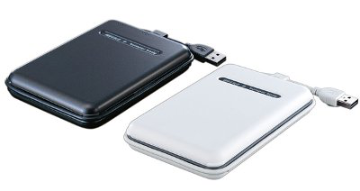
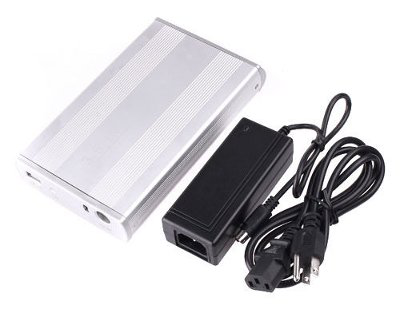
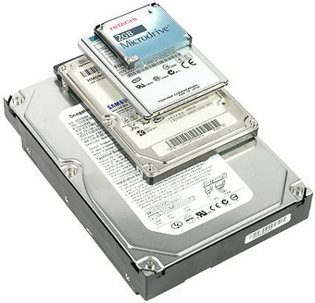
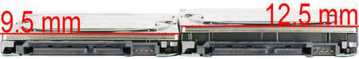
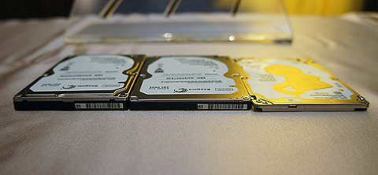

Результаты теста для SSD Vertex 3 и HDD Seagate 3 Тбайт.
Производительность SSD значительно выше
Виды жестких дисков - pc-hard.ru
15-21 минута
Ассортимент жестких дисков настолько огромен, что разобраться, какой винчестер выбрать для той или иной задачи, бывает очень непросто. Поэтому я попробовал написать своего рода краткий путеводитель по миру жестких дисков, в котором расскажу о направлениях развития индустрии “винтов” и дам примеры использования тех или иных моделей.
Я не будут особенно глубоко вдаваться в историю и повествовать обо всем, что было изобретено и реализовано за более чем полувековую историю, а расскажу преимущественно о том, с чем может столкнуться современный пользователь, придя в магазин или заглянув в системный блок.
Со времени создания первого HDD (Hard Disk Drive) многое изменилось. Напомню, что за столь долгий срок неизменным остался лишь принцип работы – вращающиеся намагниченные пластины и считывающие с них информацию головки – именно это объединяет все модели.
Принцип работы HDD - движущиеся головки считывают с вращающихся блинов информацию
Количество производителей винчестеров постоянно сокращается – постоянные поглощения и слияния привели к тому, что производителей осталось всего трое – Western Digital, Seagate и Toshiba, причем на первые два приходится более 90% доли рынка. С другой стороны, количество моделей, отличающихся размерами и техническими характеристиками, постоянно растет.
Seagate, Western Digital, Toshiba - все, кто сумел выжить в тяжелой конкурентной борьбе
А все потому, что область применения становится все шире, а требования все жестче. Появляются модификации особого назначения для эксплуатации в разных устройствах помимо компьютера.
Форм-фактор 3,5 и 2,5 дюйма.
Все многообразие винчестеров можно условно разбить на две большие категории, определяемые размерами (шириной) устройства в дюймах. Другими словами, существуют так называемые “большие” жесткие диски – 3,5 дюйма, и маленькие – 2,5 дюйма. Чем больше накопитель, тем больше размер каждой пластины в нем, и тем больше информации помещается на устройстве.
Максимальный объем «больших» хардов достиг 10 Тбайт, в то время как у большинства «мелких» емкость ограничилась одним терабайтом (в продаже можно найти модели и на 2 Тбайт – он они слишком дороги).
Сравнение двух- и трехдюймовых HDD.
Разница в размерах и весе видна невооруженным глазом.
Также отличаются тепловыделение, уровень шума и энергопотребление
Первая группа (3,5 дюйма) используется в обычных стационарных компьютерах. В любом десктопе стоит именно такое устройство, на котором и хранятся как операционная система, так и файлы пользователя – изображения, видео, музыка и документы.
«Малышей» же устанавливают преимущественно в ноутбуки. Благодаря своим размерам, они не занимают много места, не сильно утяжеляют портативный ПК, а, кроме того, потребляют мало энергии, продлевая время работы от аккумулятора.
Однако “мелким винчестерам” находится и дополнительное применение – они часто используются в домашних медиаплеерах, позволяя записать огромное количество видео- и аудиоматериалов, во внешних жестких дисках, подключаемых напрямую к компьютеру (DAS), а также в сетевых файловых хранилищах (NAS).
NAS - типичный пример использования винчестера.
Данное файловое хранилище подключется по сети и несет в себе 4 жестких диска
Здесь мы подходим ко второму немаловажному отличию между этими группами – энергоэффективности. Если крохотные двухдюймовые устройства при нагрузке потребляют в пределах 2-2,5 Ватт (а на холостом ходу вообще меньше Ватта), то старшие собраться более прожорливы и могут кушать около 7-10 Ватт.
Это качество позволяет мелким собратьям обходится без внешнего источника питания, они запитываются прямо от USB-порта компьютера или даже смарфона (а также планшета). Напомню, что порт USB 2.0 при напряжении 5 Вольт выдает ток в 0,5 Ампера, то есть мощность, выдаваемая портом, составляет 2,5 Ватта (или 4,5 Ватта для USB 3.0).

Пример внешнего жесткого диска.
Для подключения используется порт USB.
Внутри находится 2,5-дюймовый винчестер
Именно по этой причине «малыши» очень часто используются во внешних винчестерах – мощности USB порта достаточно, чтобы прокормить устройство. То есть, такой накопитель самодостаточное устройство – ему требуется только короткий шнур для связи в компьютером.
А вот при использовании трехюймовых накопителей внешнее питание обязательно. Поэтому они мало подходят для удобной транспортировки – мало того, что в карман не положишь, так еще надо будет внешний блок питания носить с собой, а ведь он, порой, занимает места больше чем само устройство. Этим и объясняется популярность применения ноутбучных винчестеров в качестве портативных накопителей.

Внешний HDD 3,5 дюйма.
Блок питания по размерам сопоставим с самим устройством.
Ни о какой компактности и речи быть не может
Мультимедиа плееры используют оба класса. Но при этом компактные модели содержат 2,5-дюймовые винчестеры – это не только значительно уменьшает габариты, но и снижает энергопотребление, шум и вибрацию, что немаловажно при просмотре кино или прослушивании музыки. Если нужен бесшумный медиаплеер или хранилище – то такие винчестеры самый подходящий выбор.
Медиалеер - позволяет смотреть видео и слушать музыку.
Подключается к телевизору и имеет пульт.
Но внутри тот же винчестер 3,5 дюйма
Третье важное качество – вес. “Взрослые” модели весят довольно много, поэтому их применение исключено в портативных устройствах, жестких дисках, камерах, ноутбуках и т. д., в то время как “малыши” не оттягивают карман и не слишком утяжеляют технику.
Лилипуты 1,8 дюймов.
Также существуют и крохотные модели форм-фактора 1,8 дюйма. Их емкость еще меньше, но цена достаточно высока. Поэтому применялись они только там, где требуется исключительная компактность. Например, в портативных mp4 плеерах. Правда в связи с бурным развитием flash-памяти они все менее и менее востребованы. А в настоящий момент почти вытеснены флэшем.

Крохотный винчестер 1,8 дюйма (второй сверху).
Не выдержал конкуренции и вытестнен флэшем.
Снизу HDD 3,5 дюйма, на нем - HDD 2,5 дюйма
Интерфейсы SATA и IDE
Простым языком, интерфейс – это разъемы с помощью которых происходит подключение к материнской плате компьютера или к другому устройству.
Интерфейс IDE
Довольно древнее средство подключения жестких дисков. В продаже уже не найти таких HDD – они давно сняты с производства, однако на некоторых не самых новых моделях компьютеров все еще можно встретить такие винчестеры.
Отличаются тем, что через один кабель (шлейф) подключается два устройства. Причем на самих HDD перемычками (джамперами) требовалось выставлять какое устройство будет первичным, а какое вспомогательным. Старожилы отлично помнят, сколько нервов потрачено на правильную установку джамперов.
Шлейф для подключения двух IDE винчестеров к материнской плате
Максимальная пропускная способность – 133 Мбайт/с – современные модели уже давно превысили эту отметку. Как подключить такое устройство к современным платам, не обладающим соответствующим разъемом, можно прочитать в статье Как подключить старый IDE жесткий диск к новому компьютеру
Интерфейс SATA
Современный интерфейс подключения. Каждый винчестер соединяется отдельным кабелем, что избавляет от возни с настройкой (как в IDE). Кроме того, пропускная способность интерфейса значительно выше. Существуют несколько версий SATA, отличающихся только скоростью.
Разъемы SATA (сверху) и IDE (снизу). Современный разъем SATA намного компактнее
Подробная информация о том, как выглядят разъемы есть в статье “Как подключить жесткий диск к компьютеру”.
Причем, если у IDE винчестеров 2-х и 3-х дюймовые экземпляры имели разные, не совместимые друг с другом разъемы, то у SATA оба класса устройств используют идентичные штекеры.
Толщина жесткого диска
В то время как у 3,5-дюймовых жестких дисков толщина важной роли не играет, у младших собратьев она имеет важное значение. Номинально ее значение у ноутбучных винчестеров составляет 9,5 мм.
Толщина HDD определяется количеством магнитных пластин. Чем больше пластин, тем больше емкость винчестера, но тем толще получится конечное устройство.
Портативные диски обычно несут от одной до трех пластин (“Большие диски” – трех до пяти пластин). Поэтому их толщина может варьироваться от 7 мм (с одной пластиной) до 12,5 мм (с тремя пластинами).
Стандартный и самый распространенный вариант – 9,5 мм при двух пластинах. Именно они используются в большинстве ноутбуков. При покупке более толстой (и более емкой) модели можно столкнуться с невозможностью установки в лэптоп – винчестер просто не поместится в соответствующем отсеке.

Сравнение моделей с толщиной 12,5 и 9,5 мм.
У первого на одну пластину больше.
В остальном модели не отличаются
Поэтому при покупке устройства для замены в ноутбуке обязательно нужно смотреть на толщину. Более того, в ультрабуках, отличающихся компактностью, устанавливаются диски толщиной всего 7 мм.
Но индустрия не стоит на месте, и производители уже представили винчестеры толщиной всего 5 мм (с одной пластиной). Но они только появляются на рынке и достаточно дороги.

Сравнение ноутбучных винчестеров 9,5 мм (слева), 7 мм (в центре) и 5 мм (справа). Современная модель с толщиной 5 мм легко впишется даже в самый тонкий ультрабук
С другой стороны, в портативных внешних винчестерах нет смысла гоняться за толщиной, поэтому в них иногда ставят харды 12,5 мм. При этом емкость может доходить до полутора и даже до двух терабайт.
Скорость вращения винчестеров.
Еще один важный момент, на который нужно обратить внимание при покупке винчестера – скорость вращения шпинделя (и пластин). У «медленных» моделей она находится в диапазоне 5200-5900 об/мин (стандартно – 5400 об/мин).
Такие модели не сильно греются, не шумят, почти не обладают вибрацией, однако и производительность их относительно невысока. Основное назначение – компьютеры и устройства со слабым или отсутствующим охлаждением, а также системы, главным требованием к которым является тишина – например медиацентры и плееры.
Более скоростная группа с частотой 7200 об/мин обладает более высокой производительностью, однако греется и шумит значительно выше. Но главной проблемой при домашнем использовании таких моделей является вибрация, о которой чуть ниже. Ранее на такие винчестеры устанавливалась операционная система – высокая скорость вращения обеспечивала низкое время доступа к информации, что положительно сказывалось отзывчивости системы.
Следующая группа винчестеров – 10 000 об/мин и более – экстремальная линейка жестких дисков, обладающая крайне высокой производительностью. Тепловыделение настолько высокое, что такие диски требуют отдельного радиатора.
VelociRaptor - яркий пример быстрого винчестера с высокой частотой вращения. Без массивного радиатора HDD быстро перегреется.
Но с появлением SSD необходимость в винчестерах с высокой частотой вращения в домашнем секторе практически отпала. Система ставится на твердотельник, а данные хранятся на традиционном диске. Использование быстрых дисков оправдано лишь в корпоративном сегменте, где требования к шуму и вибрации невысоки, там на них по прежнему большой спрос.
Надо заметить, что модели последней группы особенно быстро вытесняются SSD. Скорость трердотельников несоизмеримо выше, даже по сравнению с самыми быстрыми образцами винчестеров - про это можно прочитать в статье Сравнение скоростей SSD и HDD. При этом они полностью бесшумны, потребляют меньше электричества и почти не греются, а цена на них зачастую даже ниже «быстрых HDD».
Результаты теста для SSD Vertex 3 и HDD Seagate 3 Тбайт.
Производительность SSD значительно выше
Благодаря развитию технологий и росту плотности записи на пластинах скорость чтения «тихоходных моделей» перевалила за 150-160 Мбайт/с, что выше чем у самых резвых экземпляров 1- или 2-летней давности. Так что медленным их можно называть только условно.
Емкость HDD
Особенность существующего положения на рынке заключатся в том, что ввиду технологических сложностей скорость роста емкости накопителей постоянно замедляется, поэтому не стоит в скором времени ждать огромного прироста, как это было ранее.
На данный момент максимум у 3,5-дюймовых винчестеров – 10 Тбайт, но самыми оптимальными по цене за гигабайт являются пятитерабайтные модели.
У ноутбучных винчестеров все намного проще. Если отбросить экзотические модели, то оптимальный объем – 1 Тбайт, и он же является максимальным в стандартном корпусе 9,5 мм. Для большинства целей – такого диска хватит с лихвой.
Уровень шума и вибрация
Часто одним из главных требований к эксплуатации дома является комфорт. Как бы странно это ни звучало, но на первое место по важности выходит низкий уровень шума, издаваемого накопителями.
Модели с низкой частотой вращения шпинделя обычно работают намного тише своих быстрых собратьев, которые издают постоянный низкочастотный свист. Кроме того, вибрация передается на корпус компьютера (или другого устройства), поэтому при работе двух и более устройств с высокой частотой в одном корпусе вибрация многократно усиливается.
Вам наверняка приходилось слышать раздражающий низкочастотный гул, издаваемый корпусом. Виновником являются именно быстрые HDD, работающие в паре (и большем количестве). Наилучшим решением является использование экономичных низкооборотистых моделей.
Температура и стабильное питание
Современные накопители – очень сложные электронные устройства, их долговечность сильно зависит от условий эксплуатации. Во-первых, диски (прежде всего 3,5-дюймовые) необходимо правильно охлаждать. Забившийся пылью радиатор в ноутбуке или неправильная организация движения потоков воздуха в десктопе могут привести к работе при повышенных температурах, что значительно сокращает срок жизни HDD.
Дополнительное охлаждение от Zalman.
Позволяет снизить температуру на 5-7 градусов.
Очень эффективное cредство в корпусах с плохой вентиляцией
Комфортная температура для накопителя – ниже 40 градусов. Диапазон 40-45 еще терпим, хоть и нежелателен. Крайне не рекомендуется использовать диск при более высоких температурах.
Посмотреть температуру можно штатными утилитами или сторонними программами, например, HD Tune или CrystalDiskInfo (обе бесплатные).
HD Tune. Среди прочего позволяет определить температуру винчестеров
Второй немаловажный момент – стабильное питание – более актуален для стационарных компьютеров. Старый блок питания с подсохшими элементами, не сглаживающий скачки напряжения, может являться причиной выхода из строя винчестера.
Мне много раз приходилось слышать от покупателей много нелестных отзывов о производителях HDD, например, когда “умирают” два купленных подряд диска, но причина в конечном итоге оказывалась в некачественном или старом блоке питания, после замены которого все приходило в норму.
Гибриды
Рассказ был бы неполным без упоминания о гибридах. Это такой тип HDD в котором традиционный диск дополняется накопителем на flash-памяти небольшой емкости (за счет чего цена хоть и выше, но ненамного). Флэш-диск содержит самые частоиспользуемые файлы (или блоки) жесткого диска, повышая производительность. Емкость гибрида такая же, как и у обычных HDD, и намного больше объема SSD.
Но, по моему мнению, гибриды не особенно прижились. Если нужна экономия денег – лучше вообще обойтись без SSD, а если нужна производительность, лучше купить полноценный твердотельник.
Единственно место, где использование гибридов оправдано – в ноутбуках, они имеют только один отсек для накопителя и установить два устройства сразу не выйдет.
Рекомендации
При использовании 3,5-дюймовых винчестеров я рекомендую использовать накопители серии Green производства Western Digital, работающие почти бесшумно, а для NAS (и медиалееров), а также при совместном применении двух и более накопителей, я рекомендую остановиться на серии Red этого же производителя.
Western Digital серии Red.
Замечательный представитель бесшумных винчестеров.
Вибрация в линейке Red сведена к минимуму, благодаря чему даже при одновременной работе четырех экземпляров вибрация и раздражающий низкочастотный гул будут незаметны.
Среди ноутбучных винчестеров довольно неплохи Hitachi серии Travelstar и WD серии Scorpio Blue. Важно лишь не забывать про толщину устройств в случае замены HDD на аналогичный большей емкости.
Устройства Seagate также неплохи, но обычно они чуть дороже (для 3,5 дюймовых моделей), и уровень шума у них чуть выше.
И не забывайте про правильную эксплуатацию любых HDD, не давайте винчестеру перегреваться, иначе жизнь его будет слишком скоротечной.